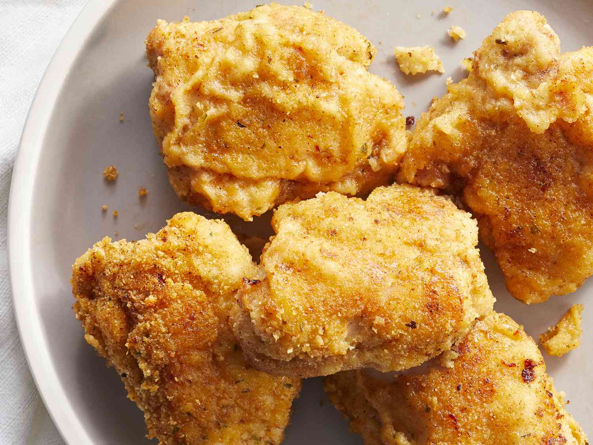

Fried Chicken

Description
Fried Chicken a dish consisting of chicken pieces that have been coated with seasoned flour or batter and pan-fried, deep fried, pressure fried, or air fried.
Ingredients
- Chicken Breast One batch of this recipe makes about 3-4 chicken breasts, or around one and a half pounds, cut into strips. One chicken breast equals about three strips, the way I cut them.
- Butter Salted or unsalted butter is fine.
- Flour All-purpose flour, or you could use gluten-free flour if you prefer.
- Panko Panko breadcrumbs give the chicken a crunchy, crispy coating. Original or pork rind panko are fine.
- Salt and Pepper
- Seasoned Salt This versatile seasoning goes with everything!
- Paprika Made from dried, ground peppers, paprika is not spicy, but it adds depth of flavor, a slight sweetness, and lots of colour.
Steps
- Get the Oven and Baking Sheet Ready. To get started, preheat your oven to 425°F. Line a large, rimmed baking sheet (10×15) with parchment paper, and brush the butter over the surface of the parchment. It might seem like a lot of butter, but that’s fine. It will help to crisp up the chicken coating!
- Bread the Chicken Breast Pieces. Combine the flour, panko, seasoned salt, salt and pepper, and paprika in a large paper or zip-top bag. Add the chicken to the bag, and shake the bag to coat the chicken pieces.
- Bake. Place your chicken on the prepared baking sheet, leaving a space between each strip. Bake the chicken for 10 minutes, flip carefully with a spatula, and bake for another 10 minutes. (Note: if the parchment is dry when you flip the chicken, add a drizzle of oil, to the to ensure the bottom pieces of chicken get crispy.)
- Check for Doneness. Check to make sure your chicken is cooked (165°F), as the thickness can greatly affect baking time. You want it to be done, but not overdone and dry. If it’s not yet up to temperature, bake for another 4-5 minutes at a time, until it’s cooked through
Click Homepage to see more recipes like this one.